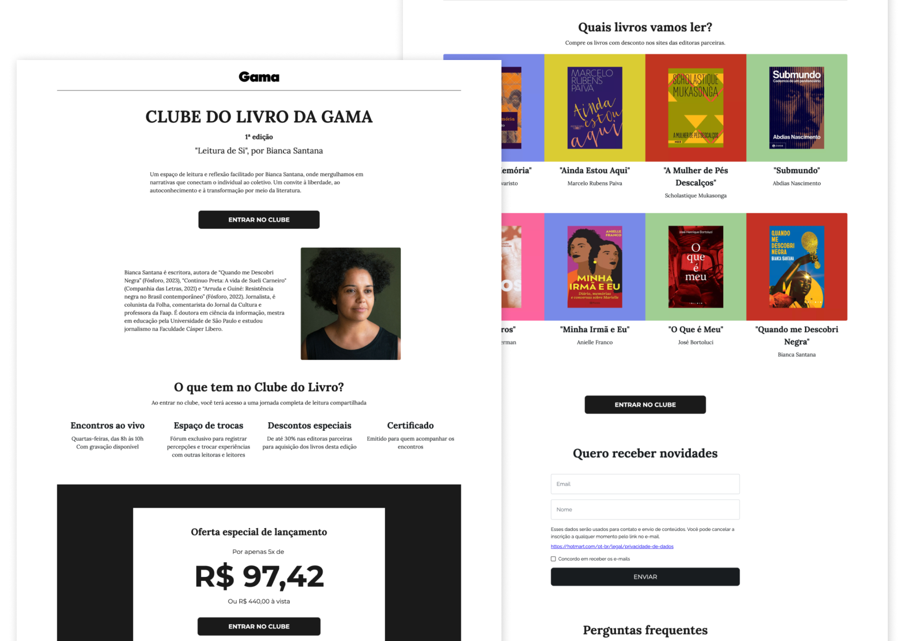

- Blog
- Clube do Livro
Landing page para Clube do Livro
Projeto
Criação de uma landing page para divulgar a primeira edição do Clube do Livro, promovido pela Revista Gama, com foco na conversão de inscrições.
A edição tinha o tema "Leitura de Si" e curadoria da escritora Bianca Santana.
Objetivo
Criar uma página de apresentação do clube que:
- Explicasse o propósito e os benefícios do Clube do Livro;
- Apresentasse a curadora e os livros selecionados;
- Facilitasse a inscrição dos interessados;
- Estivesse alinhada com a identidade visual do clube.
Estrutura da página
A página segue uma sequência que apresenta o clube, mostra o que está incluído e leva à inscrição:
- Abertura: nome do clube, edição, tema e um texto curto sobre a proposta, com o botão "Entrar no clube".
- Curadora: apresentação da Bianca Santana, com foto e biografia.
- O que tem no clube: encontros ao vivo, espaço de trocas, descontos nas editoras parceiras e certificado.
- Oferta de lançamento: valor parcelado em destaque e valor à vista.
- Livros da edição: capas, títulos e autores dos livros que serão lidos.
- Novidades: cadastro de nome e e-mail para quem quer acompanhar o clube.
- Perguntas frequentes.
O botão "Entrar no clube" aparece em três pontos: na abertura, na oferta e depois da lista de livros.
